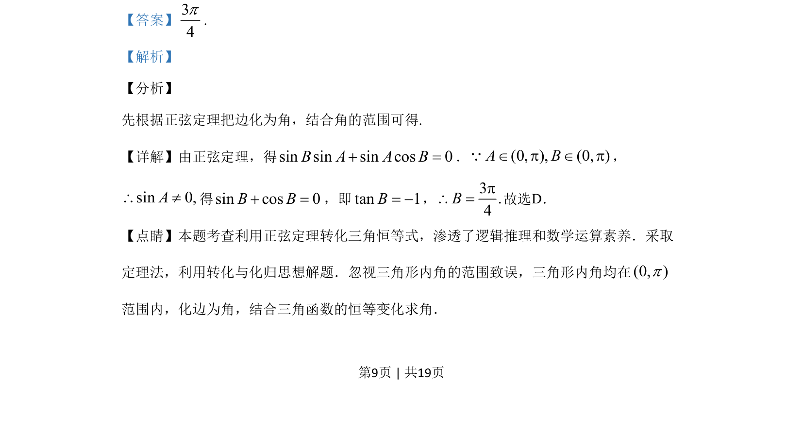

考点：正弦定理 三角恒等变换 解三角形
利用正弦定理将边角关系转化为三角方程求解三角形内角。

📄 原 PDF 第 9 页：
素材/真题/吉林/2008-2024·（吉林）数学高考真题/2019年高考数学试卷（文）（新课标Ⅱ）（解析卷）.pdf
15.VABC的内角A，B，C的对边分别为a，b，c.已知bsinA+acosB=0，则B=_ .
【答案】34p. 【解析】 【分析】 先根据正弦定理把边化为角，结合角的范围可得. 【详解】由正弦定理，得sinsinsincos0BAAB+=．(0, ), (0, )A BÎ p Î pQ， sin0,A\≠得sin cos 0B B+ =，即tan 1B= -，3.4Bp\ =故选D． 【点睛】本题考查利用正弦定理转化三角恒等式，渗透了逻辑推理和数学运算素养．采取 定理法，利用转化与化归思想解题．忽视三角形内角的范围致误，三角形内角均在(0, )p 范围内，化边为角，结合三角函数的恒等变化求角． 的